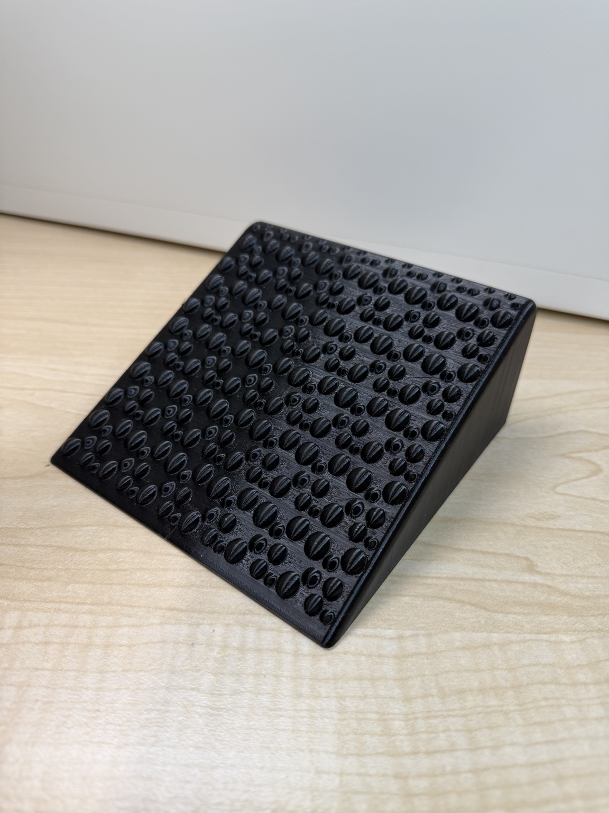
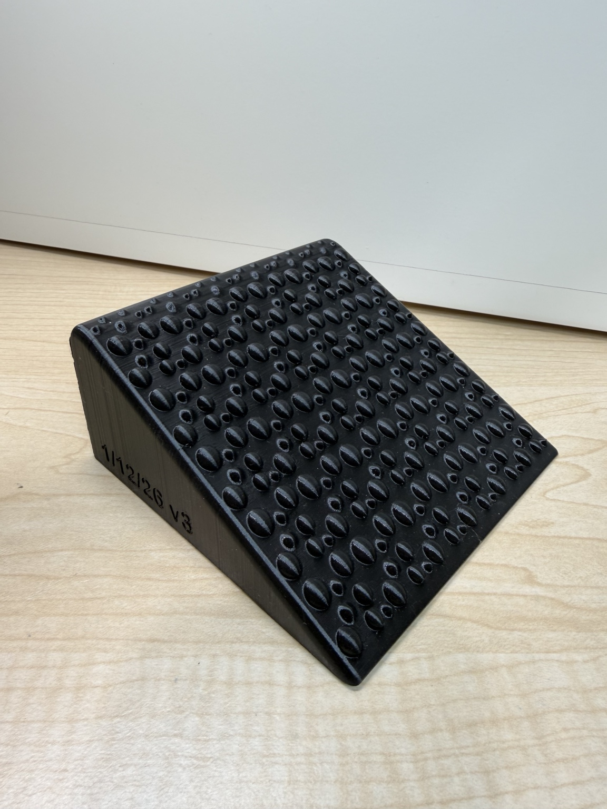
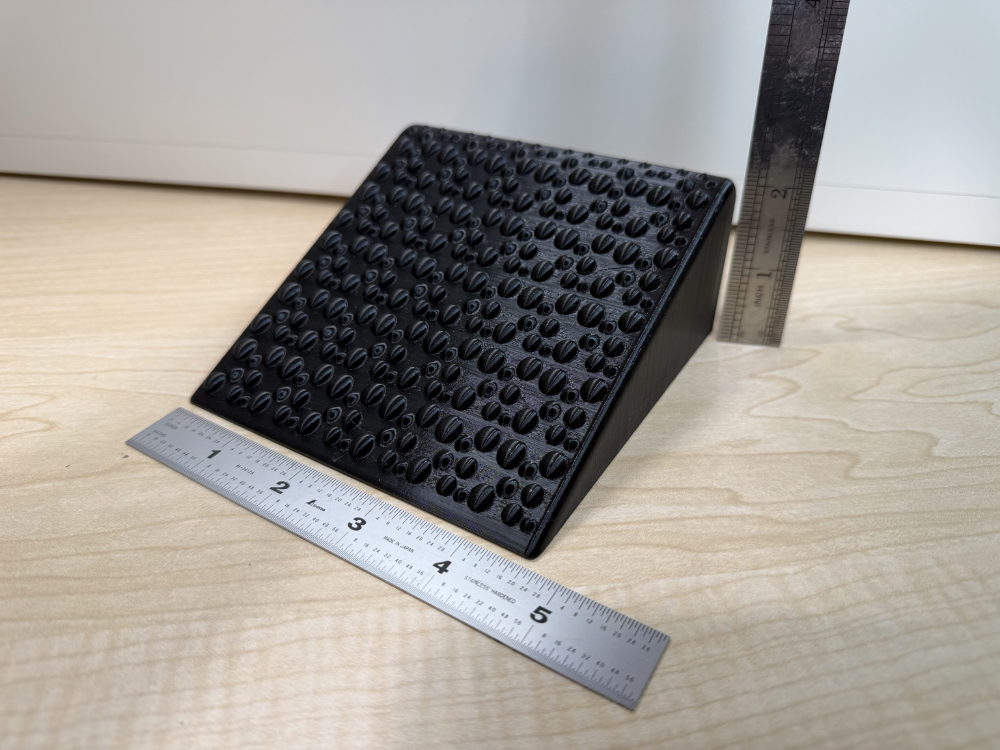

Fixed incline
A consistent wedge angle helps create repeatable stretching positions without guessing each time.
Foot & ankle mobility tool
The Stride Dynamics Lab Foot Wedge is a simple, stable incline platform designed to help target ankle mobility and calf flexibility with repeatable positioning.
Currently in early production / prototype refinement.

The problem
Many people stretch their calves, but the setup is inconsistent: heel placement changes, the foot slips, and the angle is hard to repeat. A purpose-built wedge gives you a stable reference point so the movement can be more deliberate.
This product is intended for general mobility work, warmups, stretching, and foot/ankle maintenance—not for diagnosing, treating, or curing medical conditions.
Design focus
A consistent wedge angle helps create repeatable stretching positions without guessing each time.
Raised traction features help the foot stay planted during controlled mobility work.
Softened perimeter geometry improves handling and reduces sharp contact points.
Designed to be easy to store, carry, and use at home, at the gym, or near a desk.


Built by an engineer-run lab
Stride Dynamics Lab develops practical tools for movement, mobility, and training. The Foot Wedge started from a simple observation: small limitations at the foot and ankle can influence how the rest of the body moves.
The current focus is refining the fixed Foot Wedge into a durable, useful, and approachable product before expanding the product line.
Stay connected
Reach out for product updates, early availability, or feedback on the design.
hello@stridedynamicslab.com